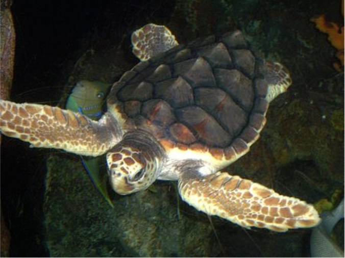
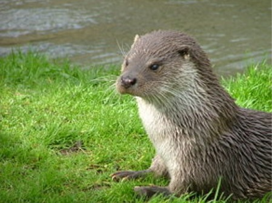
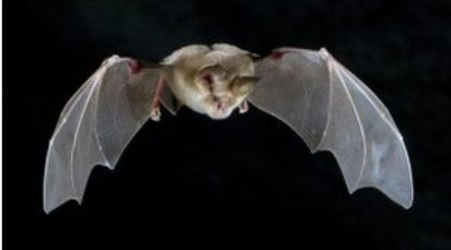

Llista d'espècies
-
Babaua - Caretta caretta 
Estat de conservació
VulnerablePoblació
Decreixent
La tortuga careta o tortuga babaua[2] (Caretta caretta) és una tortuga marina de l'ordre dels quelons i de la família dels quelònids que viu a les mars tropicals i subtropicals i es troba amb frqüencia a la Mediterrània, on sempre havia estat molt abundant.
-
Lludria - Lutra lutra 
Estat de conservació
Gairebé amenaçadaPoblació
Decreixent
La llúdria o llúdriga (Lutra lutra), sí o no amb l'epíte comuna també coneguda com a llúdria de riu europea, és una espécie de llúdria europea i asiàtica de la família Lutrinae que és típica d'aigües dolçes.[1] Als paísos Catalans està en regressió.
-
Ratpenat de ferradura mitjà - Rhinolophus mehelyi 
Estat de conservació
Vulnerable
Població
Decreixent
El ratpenat de ferradura mitjá (Rhinolophus mehelyi) és una espècie de ratpenat que es troba a l'Afganistan, Algèria, Armènia, l'Azerbaidjan, Bòsnia i Hercegovina, Bulgària, Croacia, França, Grècia, l'Iran, l'Iraq, Israel, Itàlia, Líbia, Macedònia del Nord, el Marroc, Portugal, Romania, Rússia, Sèrbia, Montenegro, Eslovènia, Espanya, Tuísia i Turquia.